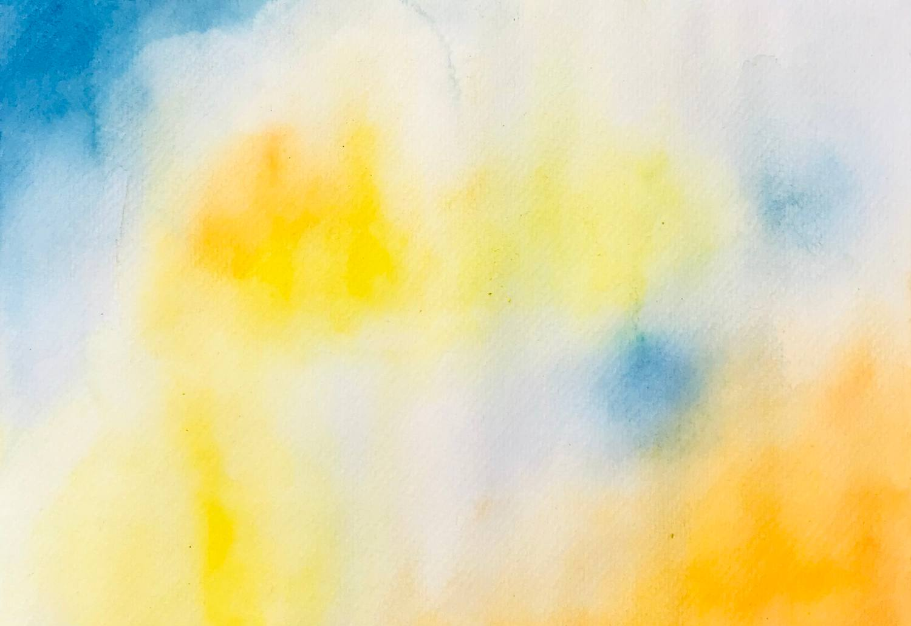

Timothée

Narrative poetry · illustrated world
Memories
of You
Written by Mey Amisa
Illustrated by Renjie Wang
← Back to writing
artist book · narrative poetry
01 · The project
A world made from what memory leaves behind.
Memories of You is a narrative poetry and illustration project that moves through a Paris art studio at dawn. A room of color, paper and unfinished gestures becomes the doorway to an inner world: part ocean, part dream, part recollection.
Mey Amisa’s words follow Timothée as faces, voices and places begin to dissolve. Renjie Wang’s watercolor language gives those fragments a body: Timothée moves through sea blue, while Madeline is held in orange. Together, words and images ask what remains when a person can no longer be remembered clearly, but can still be felt.

Madeline
The orange world
warmth · presence · the remembered lightFragments are lost
inside blurred memories,
the air I want to breathe
belongs now to the time.
02 · The illustrated world
Artworks
Watercolor studies in which silhouettes, objects and brush marks drift between recognition and loss.

03 · Sea of Arts
Underneath the sea, there are rays of the sun.
touching gently my skin, an obscure voice is leading me to you.
04 · Poetry
Sea of Arts
INTERIOR. PARIS ART STUDIO — DAY (DAWN)
The poem is set in Optima: open, human and quiet enough to keep every repeated line readable, while the blue field holds Timothée inside the atmosphere of the sea.
Read the complete poem
Fragments are lost
Fragments are lost
inside blurred memories,
the air I want to breathe
in which I felt lively,
belongs now to the time.
Inside an empty room, I found my place
It is full of wonder, that is what I believe.
It is full of wonder, that is what I believe.
My hand is drawing frequently; silhouettes,
to the melody of the night, I had never heard such a delightful lullaby.
Colors and brushes are laying on the ground,
papers are marked by fragments of you.
In nothingness, I found the key to my inner world
In nothingness, I found the key to my inner world
carried by the wind,
carried by the wind,
longing for your eyes,
a grand escape from the mystery
a grand escape from the mystery
of life.
of life.
Underneath the sea, there
Underneath the sea, there
are rays of the sun,
are rays of the sun,
touching gently my skin,
an obscure voice is
an obscure voice is
leading me to you.
I do not remember your name,
I do not remember your name,
but I know
but I know
that your voice
that your voice
was a bridge to a silent place
in which just
you and I could be.
you and I could be.
Your eyes illuminated everyone,
Your eyes illuminated everyone,
you were just yourself
you were just yourself
in such a unique way that
in such a unique way that
my heart
my heart
was filled with your
was filled with your
love.
love.
We went too far from the ocean,
We went too far from the ocean,
unable to listen to it’s waves,
unable to listen to it’s waves,
memories are fading away.
Our hearts got deaf,
Our hearts got deaf,
because we broke
because we broke
our rules.
our rules.
We followed
We followed
and did not move,
a punishment
a punishment
inside a jamais vu.
I became an unexpected
I became an unexpected
an antagonist of myself,
an antagonist of myself,
a journey full of pain,
fatigue and loss of vision
is haunting me.
is haunting me.
My breath is heavy,
My breath is heavy,
outlines of
outlines of
a human being
becomes indistinct.
I am trapped in chaos,
I am trapped in chaos,
a cold wind
a cold wind
brings me
back to
back to
the place
where everything began.
where everything began.
A calling
from the outside world,
from the outside world,
I refuse
to face my
reality.
If I could just stay a bit longer,
inside that beautiful lie.
inside that beautiful lie.
Rémy: “Timothée, they are waiting for you.”
Rémy: “Timothée, they are waiting for you.”
Closing the door,
Closing the door,
leaving a sea of arts
behind.
behind.
Filled are my longings
Filled are my longings
to find you, whose face
to find you, whose face
I once knew, all these
I once knew, all these
are memories of you.
Time changes the place
Time changes the place
and the place changes the time
and the place changes the time
in which all dreams
in which all dreams
were within reach.
05 · The book
A book as a place to enter.
The mock-up keeps the generous silence of the original pages. Watercolor travels across the fold while poetry appears like a private note, making each spread feel found rather than merely printed.
06 · Process archive
Brush, water, paper, trace.
The process stays visible: pooled pigment, dry edges, unpainted paper, accidental splashes and the marks of the hand. These are not corrections to hide; they are the grammar of the world.
Time changes the place
and the place changes the time
in which all dreams were within reach.
07 · Contact